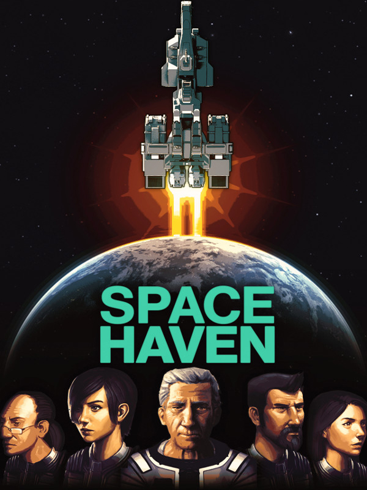

Space Haven
Space Haven
Details
|  | |
| Playtime | Not Played |
| Last Activity | Never |
| Added | 2023-08-11 0:29:07 |
| Modified | 2025-10-02 9:44:30 |
| Completion Status | Not Played |
| Library | Steam |
| Source | Steam |
| Platform | Macintosh PC (Linux) PC (Windows) |
| Release Date | 2020-05-21 |
| Community Score | 64 |
| Critic Score | |
| User Score | |
| Genre | Indie Role-playing (RPG) Simulator Strategy |
| Developer | Bugbyte Ltd. |
| Publisher | Bugbyte Ltd. |
| Feature | Single Player |
| Links | Uknown Steam Subreddit GOG Twitch Uknown |
| Tag | Base Building Building City Builder Colony Sim Crafting Early Access Exploration Indie Management Open World Pixel Graphics Resource Management Sandbox Sci-fi Simulation Singleplayer Space Space Sim Strategy Survival |
Description
 Embark on a space voyage with your ragtag crew of civilians in search of a new home. Build spaceships tile by tile, create optimal gas conditions, manage the needs and moods of their crew, encounter other space-faring groups, and explore the universe in this spaceship colony sim.
Embark on a space voyage with your ragtag crew of civilians in search of a new home. Build spaceships tile by tile, create optimal gas conditions, manage the needs and moods of their crew, encounter other space-faring groups, and explore the universe in this spaceship colony sim.


Customize - Complete freedom to build a spaceship or station of your own desire. Place every piece of ship hull, wall, door and facility wherever you want.
Functional - All facilities serve a purpose. Crew members will sleep in beds, use toilets, be disturbed by a noisy room and praise you for an arcade machine.
 A functional spaceship can be built tile-by tile, giving you the opportunity to shape a spaceship of your own desire. It can be symmetric and streamlined, or an asymmetrical whimsical looking thing. It does not have to look like a conventional spaceship depicted in sci-fi literature, you are free to design your own, the choice is yours!
A functional spaceship can be built tile-by tile, giving you the opportunity to shape a spaceship of your own desire. It can be symmetric and streamlined, or an asymmetrical whimsical looking thing. It does not have to look like a conventional spaceship depicted in sci-fi literature, you are free to design your own, the choice is yours!


Oxygen and CO2 - Keep optimal Oxygen and CO2 levels by building life support modules for your crew members.
Hazardous gases - Certain facilities and explosions can release hazardous gases. Build scrubbers to purify the air.
Temperature and power - Build thermal regulators to maintain an ideal temperature for your crew. Build power nodes and set up power distribution throughout the ship.
Comfort - Building a bed right next to the ship core will disturb sleep. Design your ship for crew comfort.
 The isometric tile-based gas system simulates various gases, temperature and crew comfort on your spaceship. Humans, plants and facilities react to the conditions surrounding them, giving meaning to how you design your ship and the living conditions you create. Secure facilities, optimize crew survival and well-being, but also think of possible future accidents and chaos generated from crew combat or environmental hazards.
The isometric tile-based gas system simulates various gases, temperature and crew comfort on your spaceship. Humans, plants and facilities react to the conditions surrounding them, giving meaning to how you design your ship and the living conditions you create. Secure facilities, optimize crew survival and well-being, but also think of possible future accidents and chaos generated from crew combat or environmental hazards.


Skills and traits - Every crew member has their own set of skills and traits. A wimp might get scared shooting a gun, while an iron-stomach can eat anything unaffected.
Mood - A happy crew member needs food, sleep, comfort, safety and friends. Take something away and their mood will be affected.
Conditions - Crew members might feel adventurous, suffer from starvation, feel unhygienic, or they simply ate too much. Various conditions affect how they feel.
Mental breaks - When the stress is too much for a crew member they may suffer a mental break. Some will vent themselves out of the air lock, while others might start a fight.
 In Space Haven characters aren't mere robots. The game simulates needs, moods, health and skills of your crew members and they develop relationships with each other. Their past life occupation and hobbies will affect their skills and know-how, and they have both positive and negative traits. Witness joyful moments, depression, and drama surrounding different crew members as you journey onward seeking a new home.
In Space Haven characters aren't mere robots. The game simulates needs, moods, health and skills of your crew members and they develop relationships with each other. Their past life occupation and hobbies will affect their skills and know-how, and they have both positive and negative traits. Witness joyful moments, depression, and drama surrounding different crew members as you journey onward seeking a new home.


Away missions - Equip your crew members and organize away teams to explore derelict ships or visit stations or spaceships of other factions.
Draft - Draft and move your crew members to attack enemies and save their friends.
Inventory - Each crew member has their own unique inventory. Equip them with pistols, rifles, grenades and more.
 Equip your crew with space suits and weapons and organize away teams to explore derelict ships and stations. Explore and salvage resources and items; find activated cryopods with someone frozen inside. Visit spaceships or stations of other factions and find data logs telling stories of past spacefarers searching for a new home.
Equip your crew with space suits and weapons and organize away teams to explore derelict ships and stations. Explore and salvage resources and items; find activated cryopods with someone frozen inside. Visit spaceships or stations of other factions and find data logs telling stories of past spacefarers searching for a new home.


Crew combat - Engage in combat with enemy factions or an alien species.
Aliens - Watch aliens incapacitate your crew members and capture them alive. See them suffer in the alien lair and decide if you want to try to save them or not.
 Aliens capture your crew members and cocoon them against walls in their base. See them suffer in the alien lair and decide if you want to save them or not. Explore derelict ships and discover someone from the original crew of the ship captured by the aliens. Events like these create interesting back stories to new arrivals to your crew.
Aliens capture your crew members and cocoon them against walls in their base. See them suffer in the alien lair and decide if you want to save them or not. Explore derelict ships and discover someone from the original crew of the ship captured by the aliens. Events like these create interesting back stories to new arrivals to your crew.


Battlestations - Watch your crew take battlestations as you engage the enemy in ship-to-ship battle. See your crew load turrets with projectiles, put out fires from explosions, patch hull breaches and repair vital facilities in the midst of battle.
Tactical - Target the enemy ship engine and stop them from fleeing. See them do the same to you. Engage their turrets directly or try to focus on the enemy ship core and see their ship go pitch black. Build shields to protect your most vital segments of your ships.
Build turrets and engage in tactical ship-to-ship combat, where a hit and explosion could cause a snowball effect of fire, smoke, hazardous gases and even hull breaches for either party. All crew members need to work together to win the battle.


Cryopods - Protect your crew from side-effects of Inter-stellar travel. Place crew members into stasis to freeze the progression of a disease or to await rescue.
Medical - Treat crew members for injuries, wounds and diseases. Medical conditions affect crew members in various ways.
 Your crew members will become wounded in battles and might catch a serious disease. Set up a medical room, scan for diseases and foreign masses and have your best doctor tend to illnesses and perform surgeries. Hope that your doctor is not absent minded and leaves a surgical tool inside.
Your crew members will become wounded in battles and might catch a serious disease. Set up a medical room, scan for diseases and foreign masses and have your best doctor tend to illnesses and perform surgeries. Hope that your doctor is not absent minded and leaves a surgical tool inside.


Generated galaxy - Explore a new procedurally generated galaxy each playthrough, with planets, asteroids, stations and spaceships of other factions.
Factions - Interact with various factions all trying to survive and establish dominance their own way. Meet pirates, merchants, slave traders, cultists and more and develop relationships with each.

Resources - Mine for raw resources and refine them to building materials. Trade resources with other groups you meet.
 Explore a new procedurally generated galaxy each new playthrough, with various factions all trying to survive and establish dominance their own way. You'll meet pirates, slavers, merchants, cults, androids and more. Jump into hyperspace, seek out resources and meet various groups and develop your relationship with them.
Explore a new procedurally generated galaxy each new playthrough, with various factions all trying to survive and establish dominance their own way. You'll meet pirates, slavers, merchants, cults, androids and more. Jump into hyperspace, seek out resources and meet various groups and develop your relationship with them.
 Cool things that can happen in Space Haven:
Cool things that can happen in Space Haven:
Gain a new crew member by finding a activated cryo chamber aboard a derelict ship.
Have a space burial for your fallen crew member to let other crew members say good bye.
Grow plants with bio mass and water recycled from toilets.
Eat the meat from a fallen crew member or an invader if desperation is high.
Watch aliens capture your crew member and cocoon them to a wall in their lair. Will you go save them or leave them there?
Keywords: space, base building, simulation, strategy, sandbox, survival, management, crafting, open world, indie, build, city builder, sci-fi, procedural, sim.
Wishlist and Follow now!